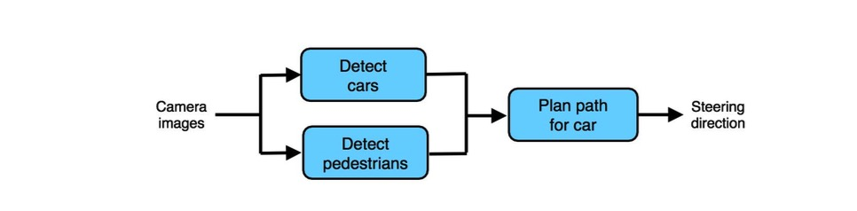
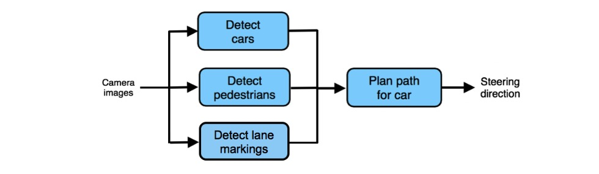

Chapter 57、Spotting a flawed ML pipeline
发现有瑕疵的ML流水线
假如你的ML流水线的每个独立组件表现在人类水平或接近人类水平，但是整体流水线却远远低于人类水平，该怎么办？这通常意味着流水线有瑕疵，需要重新设计。错误分析也可以帮助你理解你是否需要重新设计管道。

在前一章节，我们提出了三个组件中的每个组件是否达到人类水平的问题。假设所有三个问题的答案是肯定的。也就是说：
- 用于检测从摄像机图像中检测汽车的汽车检测组件（大致）是人类水平的表现。
- 用于从摄像机图像中检测行人的行人检测组件（大致）是人类水平的表现。
- 与仅根据前两个组件的输出（而不是访问摄像机图像）规划汽车路径的人相比，路径规划组件的表现和人类似。
然而，自动驾驶汽车的整体表现远低于人类水平。即，给人类访问摄像机图片，可以为汽车规划出明显更好的路径。你能得出什么结论？
唯一可能的结论是ML流水线有瑕疵。在这种情况下，规划路径组件在给定输入的情况下已经做的尽可能好了，但输入没有包含足够的信息。你应该问你自己，除了两个早先流水线组件的输出外，还需要哪些其他信息来很好地规划汽车驾驶路径。换句话说，一个熟练的人类司机需要哪些其他信息？
例如，假设你意识到人类司机还需要知道道路标记的位置。这表明你应该重新设计流水线如下【1】：

最终，如果你不认为流水线整体将会达到人类水平的表现，即使每个独立组件具备人类水平表现（记住你正在和被给予组件相同输入的人类进行比较），那么流水线是有瑕疵的并应该被重新设计。
——————
【1】在上面的自动驾驶示例中，理论上可以通过将原始相机图像馈送到路径规划组件中来解决该问题。但这违反了51章中描述的“任务简单性”的设计原则，因为路径规划模块现在需要输入原始图片，并要解决非常复杂的任务。这就是为什么增加一个检测道路标记组件是更好的选择——它有助于得到重要的和之前路径规划模块丢失的关于道路标记信息，但你可避免使用任何特定模块过于复杂而无法构建/训练。